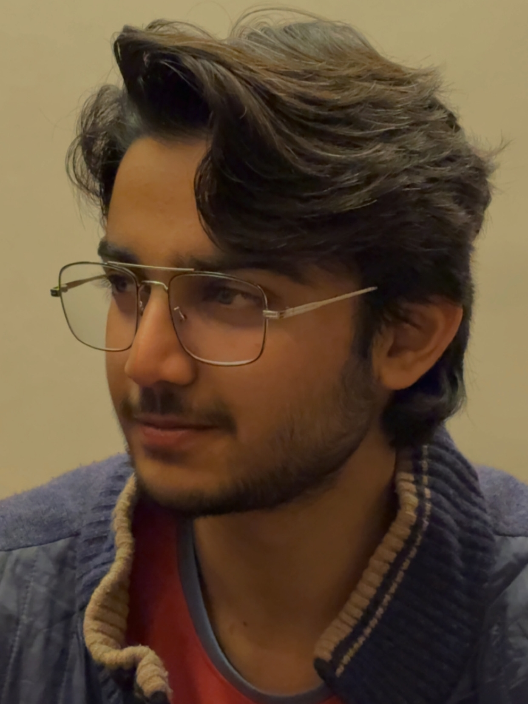

I am an aspiring Software Development Engineer and a final-year Computer Science and Engineering student pursuing my Polytechnic diploma at Jamia Millia Islamia (JMI). I have a strong interest in software development, web technologies, and building practical solutions to real-world problems. I have developed a foundation in C and C++ and am currently expanding my skills in web development and modern software technologies.
As I continue learning web development, I have been applying my knowledge through hands on projects. Using HTML and CSS, I have created UI clones of the Google homepage and Amazon website, which have helped me strengthen my understanding of webpage structure, layouts, styling, and responsive design concepts. I enjoy learning by building projects and using each project as an opportunity to improve my technical skills and understanding of development.
As part of my final year, I am currently working on an industry-oriented project focused on solving a practical problem by bringing together different concepts and skills developed throughout my academic journey. This project is giving me an opportunity to apply programming, development, problem solving, and teamwork skills in a more practical environment while understanding how different technologies and concepts can work together to create a complete solution.
I enjoy approaching challenges with a logical and solution oriented mindset. I am comfortable working under pressure, adapting to new situations, learning from mistakes, and finding effective solutions when faced with unfamiliar problems. I also value teamwork and collaboration, as I believe that sharing ideas, communicating effectively, and working together can lead to better results.
Beyond academics and development, I enjoy exploring emerging technologies, working on practical projects, and continuously improving my technical and problem-solving abilities. My goal is to grow into a skilled software developer, gain industry experience, and contribute to building reliable, useful, and meaningful software solutions.